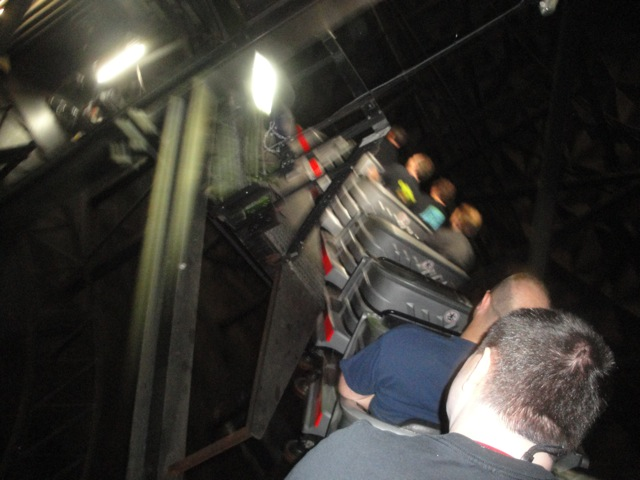
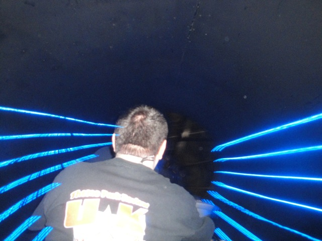
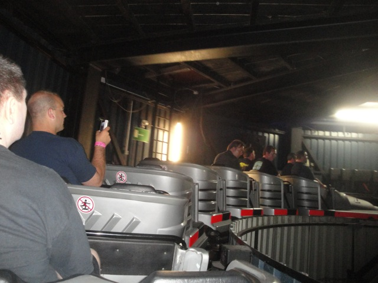
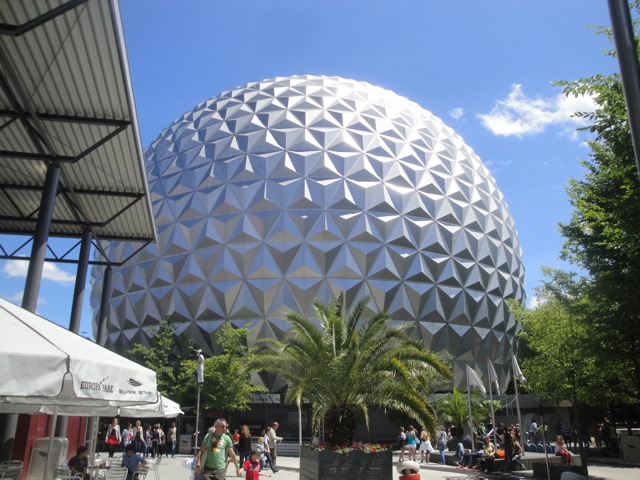

| |
Euro Sat: Can Can Coaster Review

We're here at Europa Park, where we'll be reviewing Euro Sat. Which is TOTALLY a rip off of Space Mountain. Hell, even the building it's inside looks exactly like Spaceship Earth. So you're expecting this to be a peice of sh*t because let's be honest. How many Space Mountain rip offs are good rides? Well, I can answer this. One at the bare minimum, because this is a really fun ride. Yeah, I know it's trying to imitate Space Mountain with its outer space indoor coaster theme, but Euro Sat does manage to be its own creation. It's kind of like Space Mountain, except a lot faster, with much tighter turns and more laterals, and blaring techno music. Anyways, we get in the cars, pull down the lap bars, and we're off!! We go around this spiral lifthill that just keeps going and going and going. Techno music is blaring, and while this is good, it's certainly no Euro Mir song. After a minute of lifthill, we stop and go down the first drop. Now I got a lights on ride, so I know all that the ride does. We go down a curved first drop before going through some more dark curves. We go through a mid course, go around some more turns, getting faster and faster and whipping more and more. Hey, it really is like Space Mountain with blaring techno music. We go through another mid course, before dropping and going through more sharp turns as we snake and helix through the dark. We see some planets and pass through the blue lightspeed lights as it rips of Space Mountain and sharply turns into the brake run. While not the best coaster at Europa Park or anything, Euro Sat is a very fun ride with good forces, sharp laterals, fun music, and its just an overall pleasant ride. And since my last visit, it appears that Europa Park wants to deviate away from the Space Mountain knock-off theme by turning it into the Euro Sat: Can Can Coaster. While I haven't ridden it as the Can Can Coaster, I did watch a POV. And....WTF did I just watch!? Replace the techno music with the Can Can and replace the blaring lights with....can can dancers and creepy moon theming. WTF IS THIS!!!? And I'm pretty sure it's even more crazy actually seeing it and not just watching a POV. So yeah. Definetly give it a ride when at Europa Park.
8/10
Location: Europa Park
Opened as Euro Sat in 1989
Became Euro Sat: Can Can Coaster in 2018
Built by: Mack
Last Ridden: June 26, 2012
Euro Sat Photos




Home
|